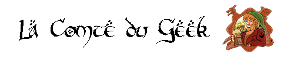
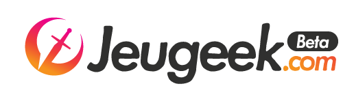
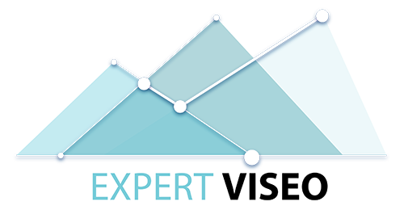

2015 - 2016 (10 mois) - Bénévolat
Rédaction d’actualité et de guides sur le jeu-vidéo Hearthstone. Suivi des joueurs de la scène eSport.
2015 - Aujourd'hui - Autoentrepreneur
Création et animation de la page Facebook, du compte Twitter, et du site web. Gestion des groupes et pages affiliées, promotion du contenu sur des groupes externes, partenariats avec des marques et des influenceurs, créations visuelles engageantes...
2018 (6 mois) - Autoentrepreneur
Rôle d'animateur et de consultant pour la page Facebook de l'EURL Geekraft. Aide au lancement du projet JeuGeek.com.
2018 (6 mois) - Intérimaire
Rédaction d’articles de 300 mots orientés SEO Sujets très variés : Matériel informatique, bassins d’extérieur, bricolage, fonds de commerce...